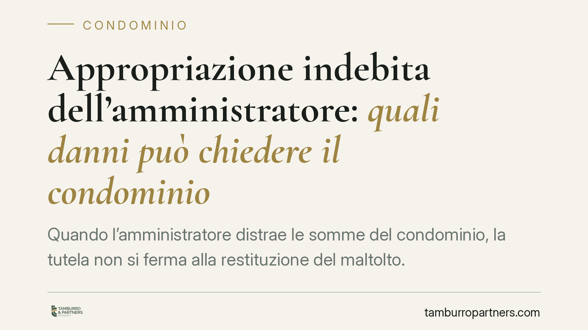

Appropriazione indebita dell'amministratore: quali danni può chiedere il condominio
Quando l'amministratore distrae le somme del condominio, la tutela non si ferma alla restituzione del maltolto. Un recente orientamento della Cassazione penale conferma che il condominio può ottenere anche il risarcimento del danno non patrimoniale e d'immagine, e che la sola incensuratezza dell'imputato non è sufficiente a riconoscere le attenuanti generiche. Vediamo cosa cambia in concreto.

Il caso e il principio
L'appropriazione delle quote condominiali da parte dell'amministratore è una delle condotte più ricorrenti nel contenzioso tra condominio e gestore. La Corte di Cassazione, Sezione II penale, è tornata di recente sul tema con una pronuncia che fissa due principi rilevanti: il condominio danneggiato può chiedere non solo la restituzione delle somme sottratte, ma anche il risarcimento del danno non patrimoniale e d'immagine; e l'incensuratezza dell'amministratore, da sola, non basta a ottenere le attenuanti generiche.
> Nota. Gli estremi esatti della sentenza richiamata (numero e anno) sono in corso di verifica sulle banche dati ufficiali. Riportiamo qui il principio di diritto, non il dato identificativo della pronuncia, che va confermato prima di ogni uso in sede difensiva.
Inquadramento normativo
La condotta rilevante è l'appropriazione indebita, prevista dall'art. 646 cod. pen.: commette il reato chi, per procurare a sé o ad altri un ingiusto profitto, si appropria del denaro o della cosa mobile altrui di cui abbia il possesso a qualsiasi titolo. L'amministratore possiede le somme condominiali in forza del mandato: distrarle a fini personali integra la fattispecie.
Sul piano della procedibilità, dopo la riforma Cartabia (D.Lgs. 150/2022) l'art. 646 c.p. è procedibile a querela della persona offesa. Si procede però d'ufficio quando ricorrono circostanze aggravanti: tra queste rileva, nel contesto condominiale, l'aggravante dell'abuso di prestazione d'opera, spesso ravvisabile proprio nel rapporto fiduciario tra condominio e amministratore. La qualificazione aggravante incide quindi direttamente sul regime di procedibilità, e va valutata caso per caso.
Quanto al termine per la querela, l'art. 124 cod. pen. fissa in tre mesi il termine per proporla, decorrenti dal giorno in cui la persona offesa ha avuto conoscenza del fatto e del suo autore. Nei casi di distrazione occultata, il momento rilevante coincide di norma con la scoperta dell'ammanco, non con la commissione della condotta.
Sul versante sanzionatorio, le attenuanti generiche di cui all'art. 62 bis cod. pen. non sono un automatismo: il giudice le riconosce valutando gli indici dell'art. 133 cod. pen. (gravità del fatto, capacità a delinquere). La Corte ribadisce che la mera assenza di precedenti penali non costituisce elemento di per sé idoneo a giustificarne la concessione.
Le tre voci di danno
Il condominio costituito parte civile può chiedere il ristoro di voci distinte:
- Danno patrimoniale: corrisponde alle somme sottratte, maggiorate di interessi e rivalutazione; è la perdita economica diretta.
- Danno non patrimoniale: riconoscibile quando la condotta lede interessi della collettività condominiale meritevoli di tutela, non riducibili al solo esborso.
- Danno d'immagine: attiene alla lesione della reputazione e dell'affidabilità del condominio verso terzi (fornitori, istituti di credito, enti), specie quando la distrazione genera morosità o segnalazioni.
La distinzione non è teorica: incide sulla quantificazione della domanda e sull'onere probatorio, poiché il danno non patrimoniale e quello d'immagine richiedono allegazione e prova specifiche, mentre il danno patrimoniale discende dalla documentazione contabile.
Implicazioni pratiche
Per il condominio e i singoli condòmini, il quadro conferma che la risposta all'ammanco si muove su due binari paralleli: quello penale, con la querela, e quello risarcitorio, con la costituzione di parte civile nel processo o con l'azione civile autonoma. La tempestività è decisiva: il termine trimestrale di querela decorre dalla scoperta e non è prorogabile.
Un nodo pratico riguarda la legittimazione a sporgere querela. Trattandosi di reato che offende il condominio nel suo complesso, è opportuno che la decisione sia formalizzata in assemblea, con delibera che autorizzi l'amministratore subentrante (o un professionista incaricato) a procedere. Resta ferma la possibilità per i singoli condòmini, quali soggetti incisi nel proprio patrimonio dalla distrazione delle quote, di attivarsi autonomamente nei limiti del proprio interesse.
Cosa fare in concreto
- Acquisisci la documentazione contabile: estratti del conto corrente condominiale dedicato (obbligatorio ex art. 1129, comma 7, cod. civ.), bilanci e rendiconti, per ricostruire l'ammanco.
- Fissa la data di scoperta: annota con precisione quando il condominio ha avuto conoscenza del fatto e dell'autore; da lì decorrono i tre mesi dell'art. 124 c.p.
- Convoca l'assemblea: è opportuno formalizzare in delibera la decisione di procedere penalmente e in sede risarcitoria, individuando chi agirà per il condominio.
- Valuta le aggravanti: verifica se ricorrono ipotesi che rendono il reato procedibile d'ufficio, per non far dipendere l'azione solo dal termine di querela.
- Quantifica tutte le voci di danno: non limitarti all'importo sottratto; documenta anche le conseguenze reputazionali ed economiche indirette.
Contributo informativo a cura di Tamburro & Partners - Avv. Giuseppe Tamburro. Non costituisce parere legale.
Ogni condominio ha una storia a sé.
Se gestisci un'amministrazione e vuoi un confronto su una specifica questione condominiale, scrivi allo studio. Ti rispondiamo entro un giorno lavorativo.